Non-Invasive Diagnostic Screenings & Comprehensive Care
Dr. Sushil Shukla provides expert diagnostic evaluations, prenatal screenings, and medical management for infants, toddlers, children, and adolescents with heart conditions.
By leveraging advanced diagnostic modalities, Dr. Shukla is able to detect congenital defects early, allowing families to plan appropriate timing for interventional closures or clinical monitoring.
Advanced heart scans for pregnant mothers to detect congenital heart anomalies early and consult on post-natal clinical care.
High-resolution diagnostic ultrasound to assess cardiac structures, valve functions, and hemodynamics in infants and children.
Medical management of children with critical, life-threatening congenital heart conditions in intensive care units.
Dr. Sushil Shukla works in close collaboration with leading pediatric cardiothoracic surgeons to provide pre-operative diagnostics, surgical mapping, and dedicated post-operative pediatric cardiac intensive care (ICU).
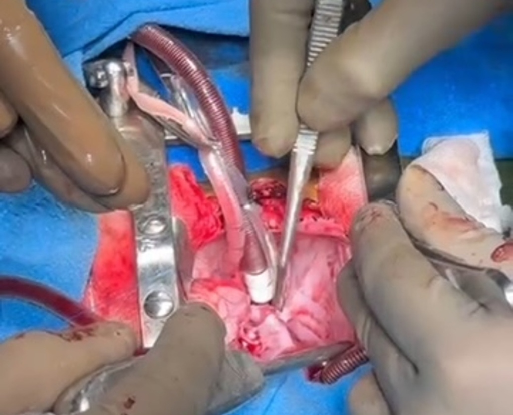
Open-heart correction of complex congenital defects in a newborn.
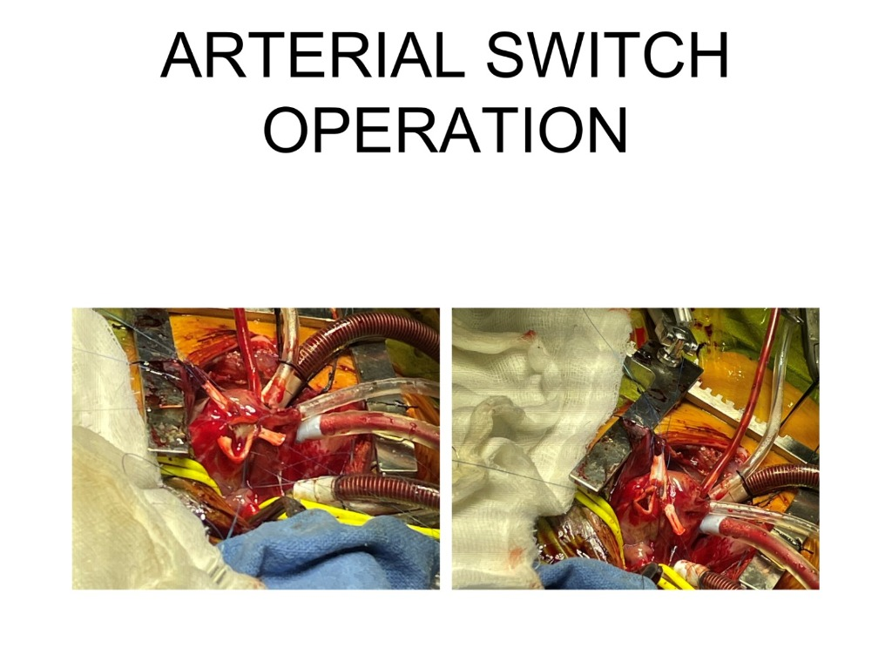
Anatomical correction of Transposition of the Great Arteries (TGA) in a neonate.
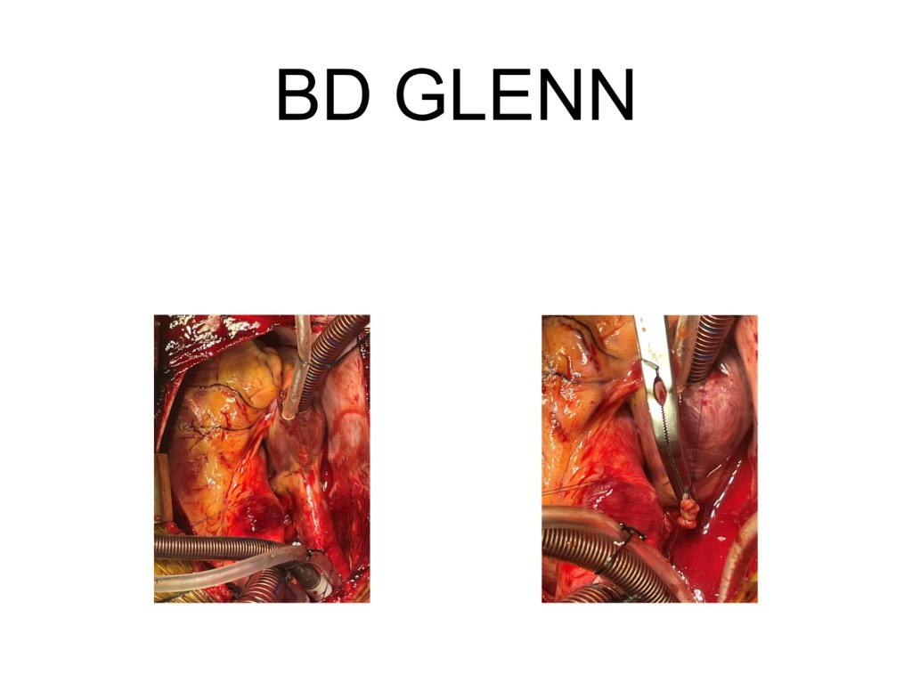
Surgical connection between the superior vena cava and the pulmonary artery.
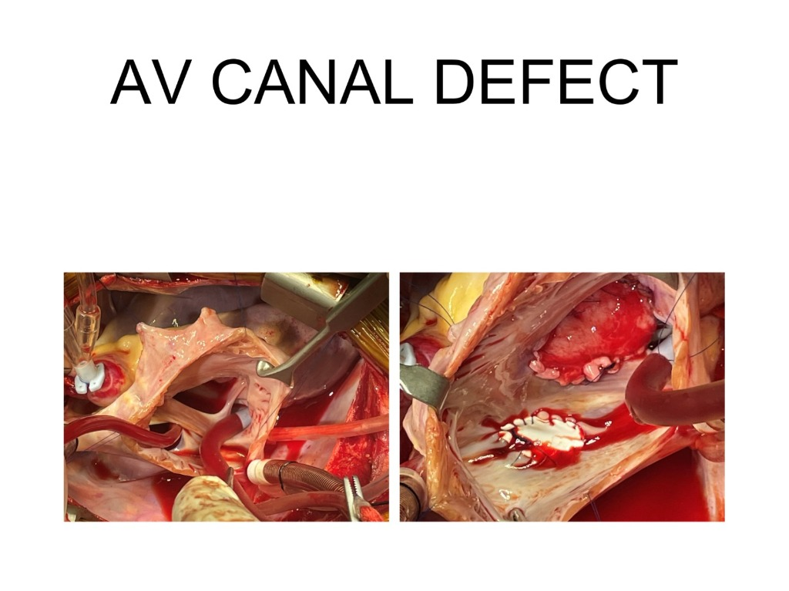
Intracardiac patch repair for atrioventricular septal defects (AVCD).
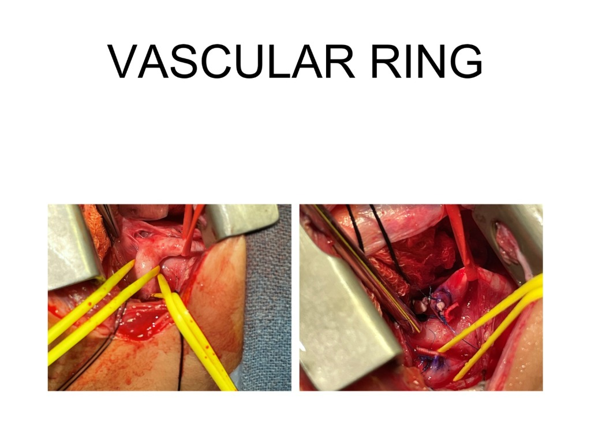
Surgical division of abnormal vessels constricting the trachea/esophagus.
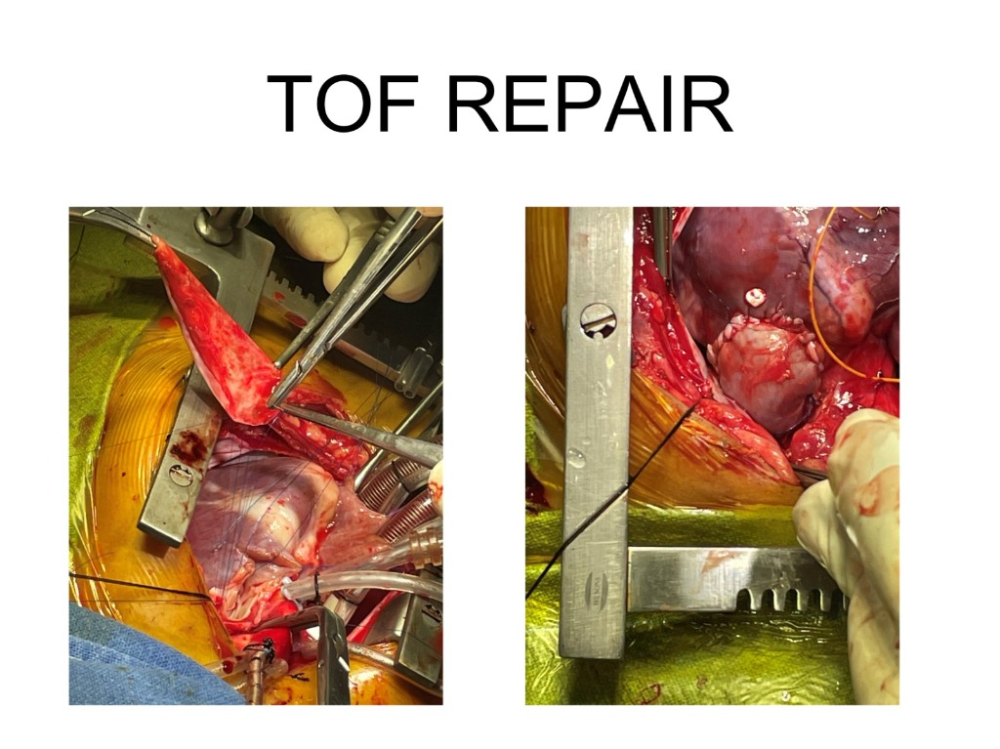
Intracardiac repair showing reconstruction of the right ventricular outflow tract.
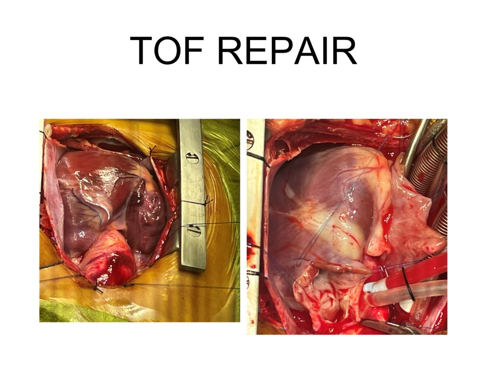
Intraoperative view of closure patch and ventricular septum reconstruction.
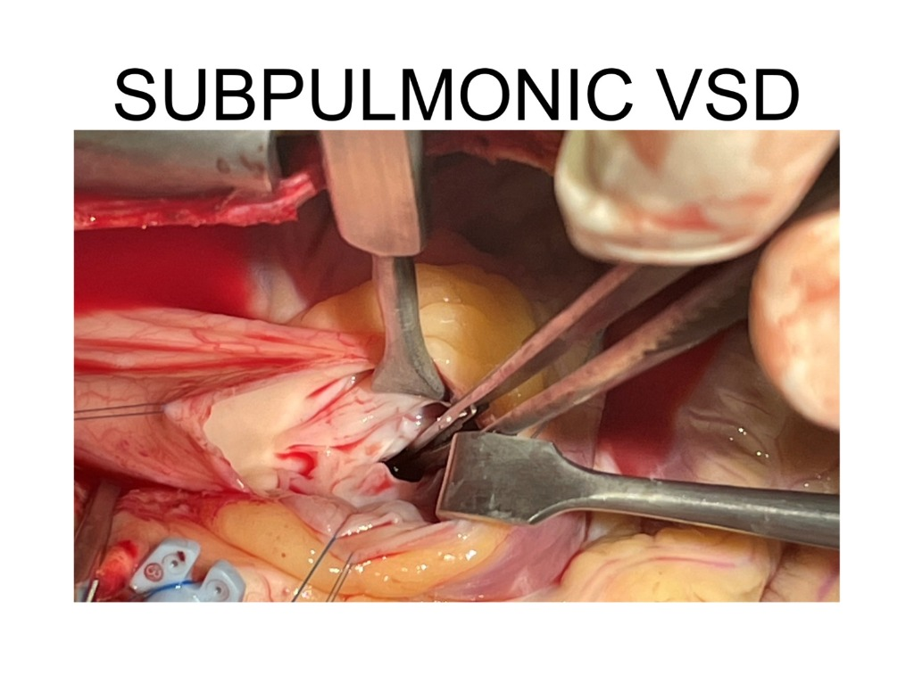
Intraoperative view showing patch closure of a subpulmonic ventricular septal defect.
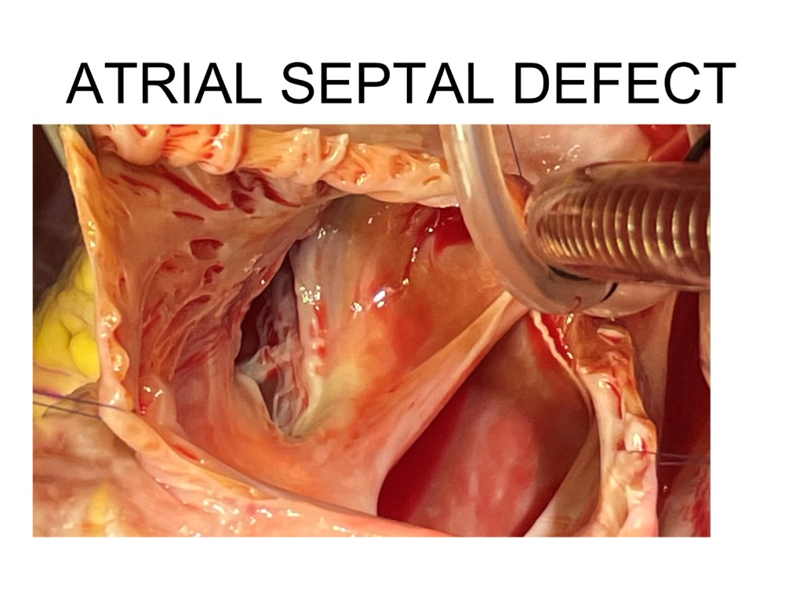
Intraoperative surgical view of patch closure of an Atrial Septal Defect (ASD).
Echocardiography and chest X-ray findings for Tetralogy of Fallot (TOF) and Transposition of the Great Arteries (TGA).
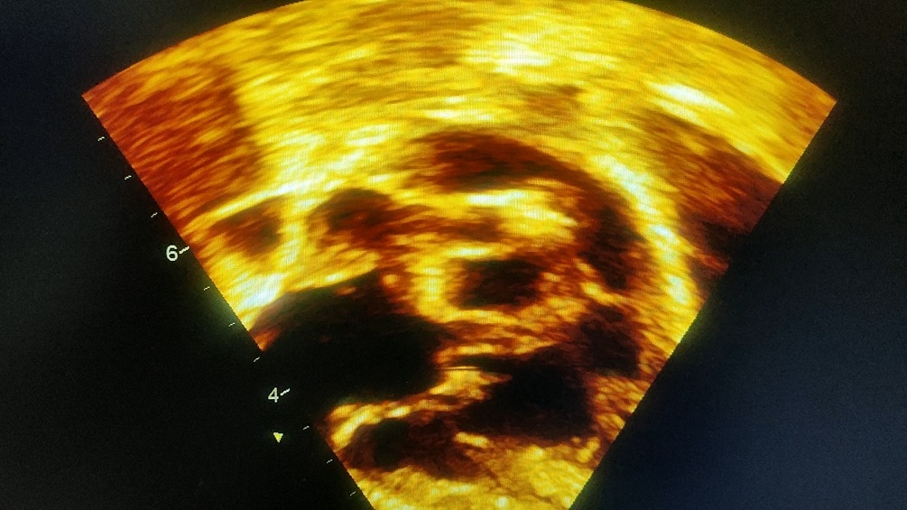
Echocardiogram showing classical structural findings in TOF associated with severe cyanosis.
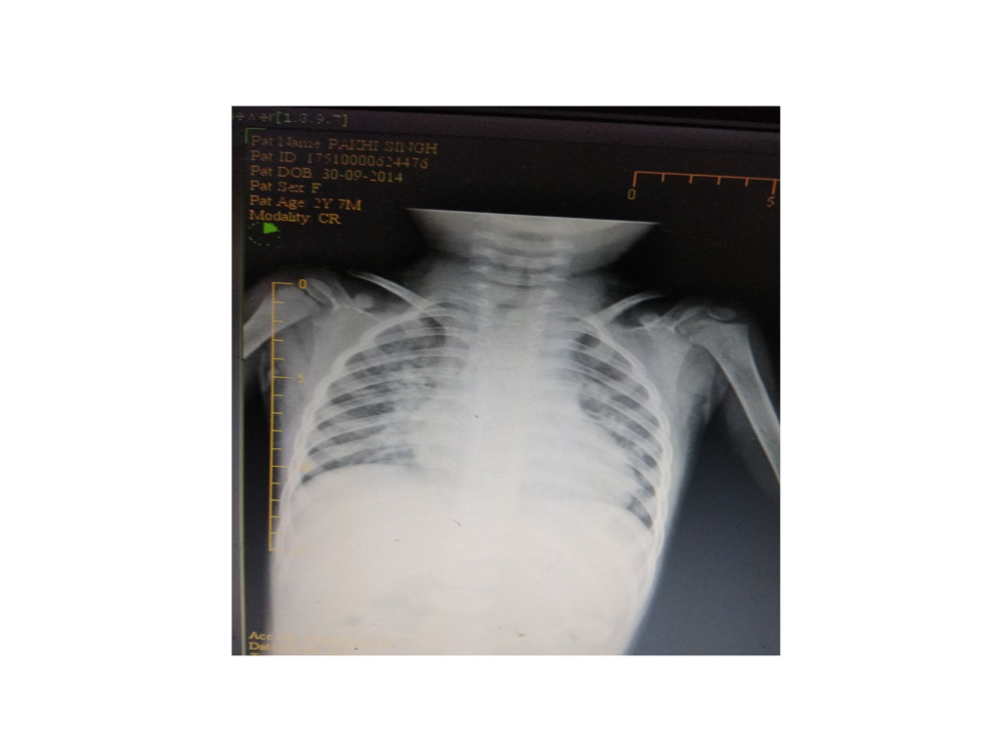
Chest radiograph demonstrating typical cardiac contours and vascularity findings in a TGA patient.
Comprehensive clinical evaluations for heart murmurs, cyanosis (blue baby syndrome), and structural anomalies.
ASD, VSD, PDA, and AVSD structural screenings.
Tetralogy of Fallot, transposition, and tricuspid anomalies.
Evaluation of abnormal heart sounds and pediatric palpitations.